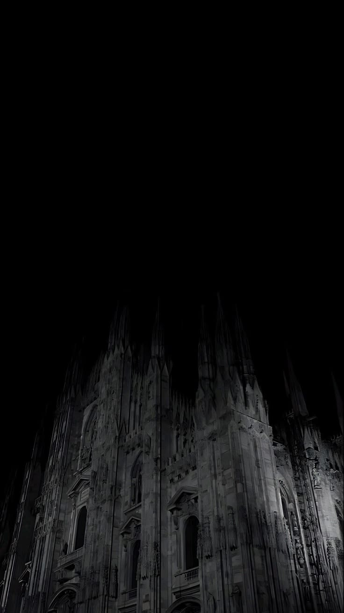

Not just a stack of buttons. A page that feels like you. Claim your handle before someone else does.
Chromaticc is built for creators who care about how things look and feel.
No clunky editor. A clean, Google Docs-style canvas that lets you type your page into existence.
Turn on a single switch and every widget transforms into premium glassmorphism with subtle glows.
Spotify, Discord, GitHub, and more update in real-time. Your page never goes stale.
Use a clean subdomain or link a custom wildcard. Own your corner of the internet.
A minimal, monochrome layout that works on every screen.
